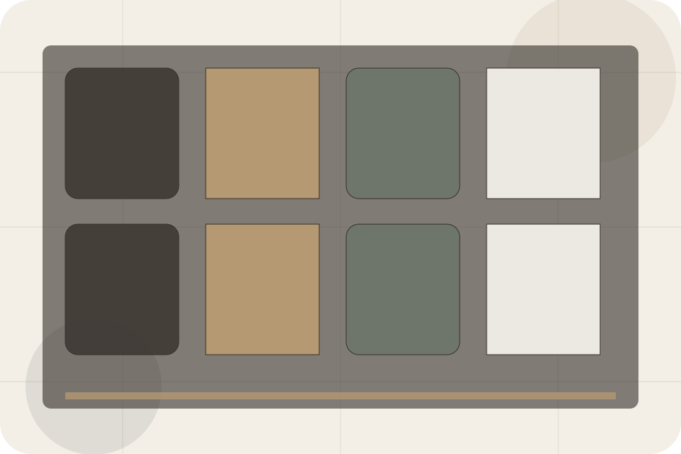
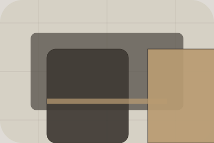

Offers / 01
Offers by Stay
Offers shaped for hospitality, hotels & guest accommodation decisions.
Offers opens as a clear hospitality decision hub: what Stay offers, who it helps, why it matters, and which route to take first.
The first screen combines positioning, proof, primary action, and fast internal navigation, so people can act immediately or compare the rest of the offers route with context.
Check availabilityPlan the visitReserve with context
Serene full-bleed stay hero
Check Availability
Select the closest route and Stay keeps the next step, proof, and follow-up expectation aligned with comfort and availability.

Offers / 02
Seasonal
Seasonal defines the better state Stay is built to create, with enough detail to make the promise believable.
A hotel site with serene full-bleed rooms, understated booking modules, experience cards, and policy calm. The section grounds that direction in concrete benefits, visible tradeoffs, and a next route visitors can use when the promise feels relevant.
Explore Offers- 01
Better State
Seasonal defines what becomes clearer, easier, or safer when Stay is the chosen route.
- 02
Practical Gain
The benefit is tied to comfort and availability, not a vague quality claim.
- 03
Proof Route
Visitors get a linked path to compare the promise against services, standards, or examples.
Offers / 03
Longstay
Longstay defines the better state Stay is built to create, with enough detail to make the promise believable.
A hotel site with serene full-bleed rooms, understated booking modules, experience cards, and policy calm. The section grounds that direction in concrete benefits, visible tradeoffs, and a next route visitors can use when the promise feels relevant.
Explore OffersStay structures longstay around better state, practical gain, and a clear next route so visitors can compare the block quickly before they check availability.
Check AvailabilityOffers / 04
Weekend
Weekend defines the better state Stay is built to create, with enough detail to make the promise believable.
A hotel site with serene full-bleed rooms, understated booking modules, experience cards, and policy calm. The section grounds that direction in concrete benefits, visible tradeoffs, and a next route visitors can use when the promise feels relevant.
Explore OffersBetter State
Weekend defines what becomes clearer, easier, or safer when Stay is the chosen route.
Offers / 05
Romance
Romance defines the better state Stay is built to create, with enough detail to make the promise believable.
A hotel site with serene full-bleed rooms, understated booking modules, experience cards, and policy calm. The section grounds that direction in concrete benefits, visible tradeoffs, and a next route visitors can use when the promise feels relevant.
Explore OffersBetter State
Romance defines what becomes clearer, easier, or safer when Stay is the chosen route.
Practical Gain
The benefit is tied to comfort and availability, not a vague quality claim.
Proof Route
Visitors get a linked path to compare the promise against services, standards, or examples.
Offers / 06
Business
Business defines the better state Stay is built to create, with enough detail to make the promise believable.
A hotel site with serene full-bleed rooms, understated booking modules, experience cards, and policy calm. The section grounds that direction in concrete benefits, visible tradeoffs, and a next route visitors can use when the promise feels relevant.
Explore OffersBusiness defines what becomes clearer, easier, or safer when Stay is the chosen route.
The benefit is tied to comfort and availability, not a vague quality claim.
Visitors get a linked path to compare the promise against services, standards, or examples.
Offers / 07
Conditions
Conditions defines the better state Stay is built to create, with enough detail to make the promise believable.
A hotel site with serene full-bleed rooms, understated booking modules, experience cards, and policy calm. The section grounds that direction in concrete benefits, visible tradeoffs, and a next route visitors can use when the promise feels relevant.
Explore OffersBetter State
Conditions defines what becomes clearer, easier, or safer when Stay is the chosen route.
Practical Gain
The benefit is tied to comfort and availability, not a vague quality claim.
Proof Route
Visitors get a linked path to compare the promise against services, standards, or examples.
Offers / 08
Availability
Availability defines the better state Stay is built to create, with enough detail to make the promise believable.
A hotel site with serene full-bleed rooms, understated booking modules, experience cards, and policy calm. The section grounds that direction in concrete benefits, visible tradeoffs, and a next route visitors can use when the promise feels relevant.
Explore OffersBetter State
Availability defines what becomes clearer, easier, or safer when Stay is the chosen route.
Practical Gain
The benefit is tied to comfort and availability, not a vague quality claim.
Proof Route
Visitors get a linked path to compare the promise against services, standards, or examples.
Offers / 09
Savings
Savings defines the better state Stay is built to create, with enough detail to make the promise believable.
A hotel site with serene full-bleed rooms, understated booking modules, experience cards, and policy calm. The section grounds that direction in concrete benefits, visible tradeoffs, and a next route visitors can use when the promise feels relevant.
Explore OffersBetter State
Savings defines what becomes clearer, easier, or safer when Stay is the chosen route.
Offers / 10
Check Availability
Stay closes the offers route with a clear action, a quick reminder of the value, and a low-friction way to check availability.
Visitors who are ready can use the primary action. Visitors who are still comparing can scan the section links, proof, and support routes before they check availability.
Check AvailabilityThe final block keeps the choice simple: act now, compare one more proof route, or send enough detail for a focused response.
Check Availabilitycomfort and availability
Check Availability
A hotel site with serene full-bleed rooms, understated booking modules, experience cards, and policy calm. Offers ends with a direct path to check availability, plus enough context for visitors who still need to compare.

Check AvailabilityNotes
Rates, availability, cancellation, and access policies depend on selected dates and booking terms.